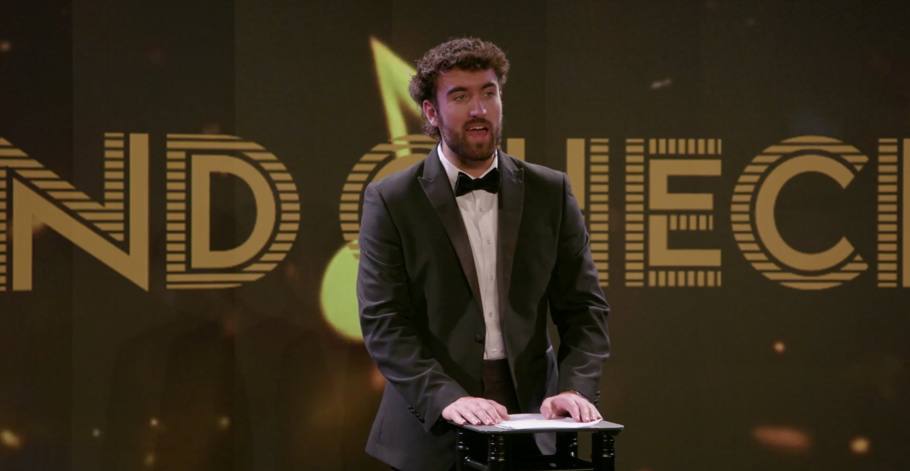

JTG provided lighting design for the concept quiz show 'SoundCheck'. Additionally, we advised on systems architecture and provided show control solutions to ensure the smooth running of the live broadcast.
